Getting in
There is no password. Your personal link is what signs you in.
Open the link from an assignment email
Every assignment email carries a personal link. Opening it signs you in and keeps you signed in. The link is yours alone, so there is nothing to remember and nothing to type.
If you ever land on the Sign in screen, paste that link — or just the code at the end of it — into the box and tap Unlock.
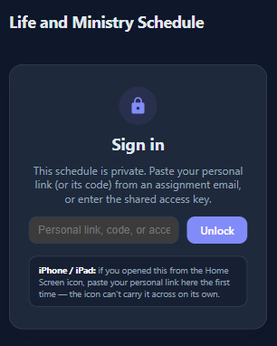
Add it to your Home Screen
Open your browser's menu and choose to install it — on an iPhone or iPad that is Add to Home Screen in the share menu; on Android it is Install and create shortcut in Chrome's menu. It then opens like any other app, full screen.
On an iPhone or iPad this step is not optional if you want reminders. Notifications only work once the app has been added to the Home Screen. And the first time you open it from the new icon you may need to paste your personal link again — the icon cannot carry it across on its own.
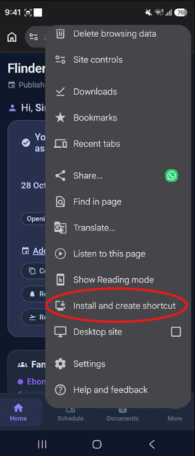
Home
What you have been given, and everything you can tell the scheduler.
What is on at the congregation
Anything coming up shows in a banner at the very top of the page — an assembly, a convention, the Memorial, a visit — marked Happening now or Coming up this week, with its dates underneath.
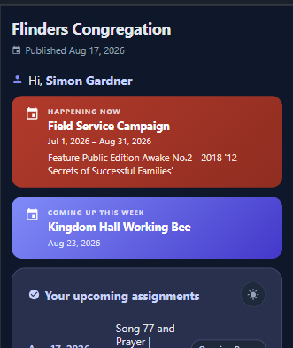
Your assignments
Under Your upcoming assignments is every part you have in the weeks published so far, with the date and your role. Tap any one of them to see its details.
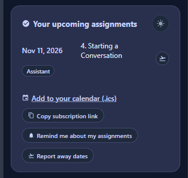
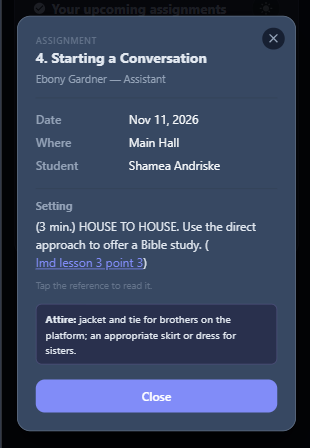
A notification when something is assigned to you
Once reminders are on, you get a notification when a new part is assigned to you, and a reminder the week before each one. You do not have to go looking.
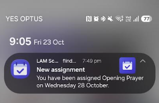
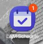
If you cannot do one
Tap the small aeroplane beside the assignment. There are two things you might be saying, so pick the one that fits:
- Away this week? — you will not be here. Give the date you are available again. If others in your household are in the congregation, you can say whether it is just you or the whole family.
- Unable to fulfill assignment? — you will be here, but cannot take this particular part. Tick Please assign me for another week if you would still like one. Your other weeks are not affected.
Either way it goes straight to the scheduler. You may still be contacted about it.
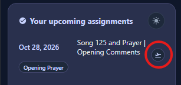
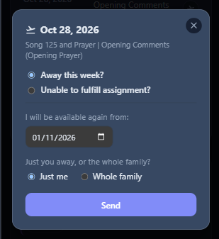
Reminders, your own calendar, and holidays
Underneath your list there are four things:
- Add to your calendar (.ics) — adds the parts you have right now, as a one-off. If the schedule changes afterwards, your calendar will not know about it.
- Copy link for your calendar app — copies that same address to your clipboard. Paste it into your calendar's subscribe to a calendar option and it re-checks for you, so changes arrive on their own. On an iPhone that is Calendar → Calendars → Add Calendar → Add Subscription Calendar; in Google Calendar it is Other calendars → + → From URL. This is the one worth doing — a one-off import goes stale the first time a part moves.
- Remind me about my assignments — turns notifications on. Tap it again to turn them off. On an iPhone, add the app to your Home Screen first.
- Report away dates — for a holiday rather than one assignment. Give the day you leave and the day you are back, and nothing will be given to you in between.
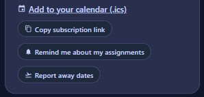
Your family's assignments
If others in your household have parts, they appear under Family assignments, each with their own colour. One page for the whole family, so nobody misses a part.
Each person has their own two buttons: Remind me about … to get their reminders on this phone, and Report away dates for them. Hide takes someone out of the section, and you can bring them back whenever you like.
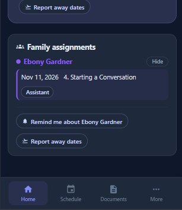
Schedule
The whole midweek meeting, week by week.
The weeks ahead
Every week that has been published, in order. A week with no midweek meeting — an assembly or a convention — says so plainly instead of listing parts, and shows what is on instead.
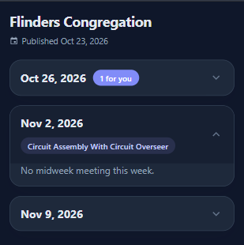
Your own parts stand out
A badge on the week tells you how many parts in it are yours, and inside the week your own parts are highlighted. You can find yourself at a glance without reading the whole meeting.
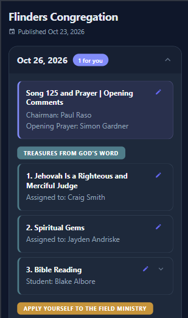
The details, and the lesson
Tap a part to open its slip: the date, which hall you are in, who you are working with, and the setting for the part.
Where the setting mentions a scripture or a lesson, it is tappable — Tap the reference to read it — and it opens there in the app rather than sending you off to look it up.
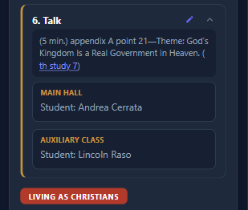
Documents
What you see here depends on what you have been appointed to.
Who sees what
| Document | Who can download it |
|---|---|
| Meeting Schedule | Everyone |
| Events | Everyone |
| Public Talk Schedule | Everyone |
| Assignments Schedule | Ministerial servants and elders |
| Assignments List | Elders |
| Chairman's Outline and Auxiliary Class Outline, as PDF or Word | Anyone assigned to handle the chairman or auxiliary class counsellor part |
Finding them
The congregation-wide documents are grouped at the top. Below them, each published week has its own heading with whatever belongs to that week — so an outline sits with the week it is for, not in a list you have to search.
Tap one and it downloads. The outlines come in both PDF and Word, whichever you prefer to work from. The auxiliary class outline only appears for a week that has a second school.
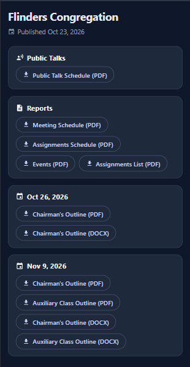